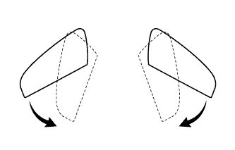
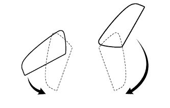
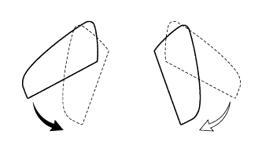
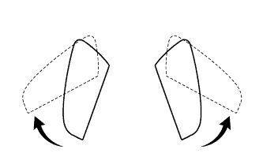
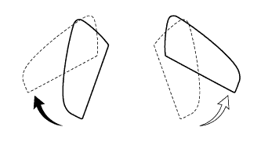

СИСТЕМА ЗЕРКАЛ С ЭЛЕКТРОПРИВОДОМ > ПРОВЕРКА РАБОТЫ СИСТЕМЫ |
| ПРОВЕРЬТЕ РАБОТУ ПЕРЕКЛЮЧАТЕЛЯ НАРУЖНОГО ЗЕРКАЛА |
Поверните замок зажигания в положение ACC.
Удостоверьтесь, что, когда главный переключатель зеркал установлен в положение L, поверхность зеркала перемещается вверх, вниз, влево и вправо должным образом.
Удостоверьтесь, что, когда главный переключатель зеркал установлен в положение R, поверхность зеркала перемещается вверх, вниз, влево и вправо должным образом.
| ПРОВЕРЬТЕ МЕХАНИЗМ ОТВОДА ЗЕРКАЛ С ЭЛЕКТРОПРИВОДОМ (для моделей с отводом зеркал) |
Поверните замок зажигания в положение ACC.
|  |
Проверьте работу механизма отвода при нажатии переключателя отвода в каждом положении корпуса наружного зеркала.
Переместите зеркала в положение для вождения.
Нажмите переключатель отвода.
Убедитесь, что правое и левое зеркала перемещаются из положения для вождения в убранное положение.
|  |
Переместите зеркала в положение для вождения.
Переместите вручную одно из зеркал в переднее положение.
Нажмите переключатель отвода.
Убедитесь, что зеркало перемещается из переднего положения и положения при вождении в отводимое положение.
|  |
Переместите зеркала в положение для вождения.
Переместите вручную одно из зеркал в убранное положение.
Нажмите переключатель отвода.
Убедитесь, что зеркало перемещается из положения при вождении в отводимое положение.
|  |
Переместите зеркала в убранное положение.
Нажмите переключатель отвода.
Убедитесь, что правое и левое зеркала перемещаются из убранного положения в положение для вождения.
|  |
Переместите зеркала в убранное положение.
Переместите вручную одно из зеркал в положение для вождения.
Нажмите переключатель отвода.
Убедитесь, что зеркало перемещается из отводимого положения в положение при вождении.
Проверьте работу наружного зеркала в зависимости от изменений положений переключателя отвода и выключателя зажигания.
Выключите зажигание во время перемещения зеркала. Убедитесь, что зеркало продолжает перемещаться, пока операция не будет завершена.
Повторите рассмотренный выше шаг. Прежде чем зеркало завершит перемещение, переведите замок зажигания в положение ACC и нажмите переключатель отвода. Убедитесь, что зеркало начинает перемещаться в противоположном направлении.
Проверьте работу наружного зеркала, когда его движение ограничивается препятствием.
Во время перемещения зеркала в убранное положение или положение для вождения задержите его рукой. Убедитесь, что зеркало прекращает движение.
Нажмите переключатель отвода, когда зеркало остановлено на полпути. Убедитесь, что зеркало перемещается в противоположном направлении.
| ПРОВЕРЬТЕ ОБОГРЕВАТЕЛЬ ЗЕРКАЛА (для моделей с обогревателем зеркала) |
Установите замок зажигания в положение ON (ВКЛ).
Убедитесь, что при нажатии выключателя обогревателя зеркала включается индикатор, и поверхность зеркала нагревается.
Убедитесь, что по истечении приблизительно 15 минут индикатор гаснет, и обогреватель зеркала выключается.